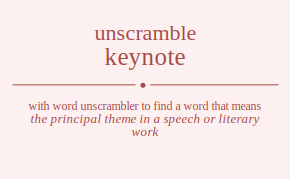

The word found after unscrambling keynote means that the principal theme in a speech or literary work, a fundamental or central idea, (music) the first note of a diatonic scale, set the keynote of, give the keynote address to (an audience), .

The word found after unscrambling keynote means that the principal theme in a speech or literary work, a fundamental or central idea, (music) the first note of a diatonic scale, set the keynote of, give the keynote address to (an audience), .
You can also find solutions for different combinations of letters in keynote like keynote keynoet keyntoe keynteo keyneot keyneto keyonte keyonet keyotne keyoten keyoent keyoetn keytnoe keytneo keytone keytoen keyteno keyteon keyenot keyento keyeont keyeotn keyetno keyeton kenyote kenyoet kenytoe kenyteo kenyeot kenyeto kenoyte kenoyet kenotye kenotey kenoeyt kenoety kentyoe kentyeo kentoye kentoey kenteyo kenteoy keneyot keneyto keneoyt keneoty kenetyo kenetoy keoynte keoynet keoytne keoyten keoyent keoyetn keonyte keonyet keontye keontey keoneyt keonety keotyne keotyen keotnye keotney keoteyn keoteny keoeynt keoeytn keoenyt keoenty keoetyn keoetny ketynoe ketyneo ketyone ketyoen ketyeno ketyeon ketnyoe ketnyeo ketnoye ketnoey ketneyo ketneoy ketoyne ketoyen ketonye ketoney ketoeyn ketoeny keteyno keteyon ketenyo ketenoy keteoyn keteony keeynot keeynto keeyont keeyotn keeytno keeyton keenyot keenyto keenoyt keenoty keentyo keentoy keeoynt keeoytn keeonyt keeonty keeotyn keeotny keetyno keetyon keetnyo keetnoy keetoyn keetony kyenote kyenoet kyentoe kyenteo kyeneot kyeneto kyeonte kyeonet kyeotne kyeoten kyeoent kyeoetn kyetnoe kyetneo kyetone kyetoen kyeteno kyeteon kyeenot kyeento kyeeont kyeeotn kyeetno kyeeton kyneote kyneoet kynetoe kyneteo kyneeot kyneeto kynoete kynoeet kynotee kynotee kynoeet kynoete kynteoe kynteeo kyntoee kyntoee kynteeo kynteoe kyneeot kyneeto kyneoet kyneote kyneteo kynetoe kyoente kyoenet kyoetne kyoeten kyoeent kyoeetn kyonete kyoneet kyontee kyontee kyoneet kyonete kyotene kyoteen kyotnee kyotnee kyoteen kyotene kyoeent kyoeetn kyoenet kyoente kyoeten kyoetne kytenoe kyteneo kyteone kyteoen kyteeno kyteeon kytneoe kytneeo kytnoee kytnoee kytneeo kytneoe kytoene kytoeen kytonee kytonee kytoeen kytoene kyteeno kyteeon kyteneo kytenoe kyteoen kyteone kyeenot kyeento kyeeont kyeeotn kyeetno kyeeton kyeneot kyeneto kyenoet kyenote kyenteo kyentoe kyeoent kyeoetn kyeonet kyeonte kyeoten kyeotne kyeteno kyeteon kyetneo kyetnoe kyetoen kyetone kneyote kneyoet kneytoe kneyteo kneyeot kneyeto kneoyte kneoyet kneotye kneotey kneoeyt kneoety knetyoe knetyeo knetoye knetoey kneteyo kneteoy kneeyot kneeyto kneeoyt kneeoty kneetyo kneetoy knyeote knyeoet knyetoe knyeteo knyeeot knyeeto knyoete knyoeet knyotee knyotee knyoeet knyoete knyteoe knyteeo knytoee knytoee knyteeo knyteoe knyeeot knyeeto knyeoet knyeote knyeteo knyetoe knoeyte knoeyet knoetye knoetey knoeeyt knoeety knoyete knoyeet knoytee knoytee knoyeet knoyete knoteye knoteey knotyee knotyee knoteey knoteye knoeeyt knoeety knoeyet knoeyte knoetey knoetye knteyoe knteyeo knteoye knteoey knteeyo knteeoy kntyeoe kntyeeo kntyoee kntyoee kntyeeo kntyeoe kntoeye kntoeey kntoyee kntoyee kntoeey kntoeye knteeyo knteeoy knteyeo knteyoe knteoey knteoye kneeyot kneeyto kneeoyt kneeoty kneetyo kneetoy kneyeot kneyeto kneyoet kneyote kneyteo kneytoe kneoeyt kneoety kneoyet kneoyte kneotey kneotye kneteyo kneteoy knetyeo knetyoe knetoey knetoye koeynte koeynet koeytne koeyten koeyent koeyetn koenyte koenyet koentye koentey koeneyt koenety koetyne koetyen koetnye koetney koeteyn koeteny koeeynt koeeytn koeenyt koeenty koeetyn koeetny koyente koyenet koyetne koyeten koyeent koyeetn koynete koyneet koyntee koyntee koyneet koynete koytene koyteen koytnee koytnee koyteen koytene koyeent koyeetn koyenet koyente koyeten koyetne koneyte koneyet konetye konetey koneeyt koneety konyete konyeet konytee konytee konyeet konyete konteye konteey kontyee kontyee konteey konteye koneeyt koneety koneyet koneyte konetey konetye koteyne koteyen kotenye koteney koteeyn koteeny kotyene kotyeen kotynee kotynee kotyeen kotyene kotneye kotneey kotnyee kotnyee kotneey kotneye koteeyn koteeny koteyen koteyne koteney kotenye koeeynt koeeytn koeenyt koeenty koeetyn koeetny koeyent koeyetn koeynet koeynte koeyten koeytne koeneyt koenety koenyet koenyte koentey koentye koeteyn koeteny koetyen koetyne koetney koetnye kteynoe kteyneo kteyone kteyoen kteyeno kteyeon ktenyoe ktenyeo ktenoye ktenoey kteneyo kteneoy kteoyne kteoyen kteonye kteoney kteoeyn kteoeny kteeyno kteeyon kteenyo kteenoy kteeoyn kteeony ktyenoe ktyeneo ktyeone ktyeoen ktyeeno ktyeeon ktyneoe ktyneeo ktynoee ktynoee ktyneeo ktyneoe ktyoene ktyoeen ktyonee ktyonee ktyoeen ktyoene ktyeeno ktyeeon ktyeneo ktyenoe ktyeoen ktyeone ktneyoe ktneyeo ktneoye ktneoey ktneeyo ktneeoy ktnyeoe ktnyeeo ktnyoee ktnyoee ktnyeeo ktnyeoe ktnoeye ktnoeey ktnoyee ktnoyee ktnoeey ktnoeye ktneeyo ktneeoy ktneyeo ktneyoe ktneoey ktneoye ktoeyne ktoeyen ktoenye ktoeney ktoeeyn ktoeeny ktoyene ktoyeen ktoynee ktoynee ktoyeen ktoyene ktoneye ktoneey ktonyee ktonyee ktoneey ktoneye ktoeeyn ktoeeny ktoeyen ktoeyne ktoeney ktoenye kteeyno kteeyon kteenyo kteenoy kteeoyn kteeony kteyeno kteyeon kteyneo kteynoe kteyoen kteyone kteneyo kteneoy ktenyeo ktenyoe ktenoey ktenoye kteoeyn kteoeny kteoyen kteoyne kteoney kteonye keeynot keeynto keeyont keeyotn keeytno keeyton keenyot keenyto keenoyt keenoty keentyo keentoy keeoynt keeoytn keeonyt keeonty keeotyn keeotny keetyno keetyon keetnyo keetnoy keetoyn keetony keyenot keyento keyeont keyeotn keyetno keyeton keyneot keyneto keynoet keynote keynteo keyntoe keyoent keyoetn keyonet keyonte keyoten keyotne keyteno keyteon keytneo keytnoe keytoen keytone keneyot keneyto keneoyt keneoty kenetyo kenetoy kenyeot kenyeto kenyoet kenyote kenyteo kenytoe kenoeyt kenoety kenoyet kenoyte kenotey kenotye kenteyo kenteoy kentyeo kentyoe kentoey kentoye keoeynt keoeytn keoenyt keoenty keoetyn keoetny keoyent keoyetn keoynet keoynte keoyten keoytne keoneyt keonety keonyet keonyte keontey keontye keoteyn keoteny keotyen keotyne keotney keotnye keteyno keteyon ketenyo ketenoy keteoyn keteony ketyeno ketyeon ketyneo ketynoe ketyoen ketyone ketneyo ketneoy ketnyeo ketnyoe ketnoey ketnoye ketoeyn ketoeny ketoyen ketoyne ketoney ketonye ekynote ekynoet ekyntoe ekynteo ekyneot ekyneto ekyonte ekyonet ekyotne ekyoten ekyoent ekyoetn ekytnoe ekytneo ekytone ekytoen ekyteno ekyteon ekyenot ekyento ekyeont ekyeotn ekyetno ekyeton eknyote eknyoet eknytoe eknyteo eknyeot eknyeto eknoyte eknoyet eknotye eknotey eknoeyt eknoety ekntyoe ekntyeo ekntoye ekntoey eknteyo eknteoy ekneyot ekneyto ekneoyt ekneoty eknetyo eknetoy ekoynte ekoynet ekoytne ekoyten ekoyent ekoyetn ekonyte ekonyet ekontye ekontey ekoneyt ekonety ekotyne ekotyen ekotnye ekotney ekoteyn ekoteny ekoeynt ekoeytn ekoenyt ekoenty ekoetyn ekoetny ektynoe ektyneo ektyone ektyoen ektyeno ektyeon ektnyoe ektnyeo ektnoye ektnoey ektneyo ektneoy ektoyne ektoyen ektonye ektoney ektoeyn ektoeny ekteyno ekteyon ektenyo ektenoy ekteoyn ekteony ekeynot ekeynto ekeyont ekeyotn ekeytno ekeyton ekenyot ekenyto ekenoyt ekenoty ekentyo ekentoy ekeoynt ekeoytn ekeonyt ekeonty ekeotyn ekeotny eketyno eketyon eketnyo eketnoy eketoyn eketony eyknote eyknoet eykntoe eyknteo eykneot eykneto eykonte eykonet eykotne eykoten eykoent eykoetn eyktnoe eyktneo eyktone eyktoen eykteno eykteon eykenot eykento eykeont eykeotn eyketno eyketon eynkote eynkoet eynktoe eynkteo eynkeot eynketo eynokte eynoket eynotke eynotek eynoekt eynoetk eyntkoe eyntkeo eyntoke eyntoek eynteko eynteok eynekot eynekto eyneokt eyneotk eynetko eynetok eyoknte eyoknet eyoktne eyokten eyokent eyoketn eyonkte eyonket eyontke eyontek eyonekt eyonetk eyotkne eyotken eyotnke eyotnek eyotekn eyotenk eyoeknt eyoektn eyoenkt eyoentk eyoetkn eyoetnk eytknoe eytkneo eytkone eytkoen eytkeno eytkeon eytnkoe eytnkeo eytnoke eytnoek eytneko eytneok eytokne eytoken eytonke eytonek eytoekn eytoenk eytekno eytekon eytenko eytenok eyteokn eyteonk eyeknot eyeknto eyekont eyekotn eyektno eyekton eyenkot eyenkto eyenokt eyenotk eyentko eyentok eyeoknt eyeoktn eyeonkt eyeontk eyeotkn eyeotnk eyetkno eyetkon eyetnko eyetnok eyetokn eyetonk enkyote enkyoet enkytoe enkyteo enkyeot enkyeto enkoyte enkoyet enkotye enkotey enkoeyt enkoety enktyoe enktyeo enktoye enktoey enkteyo enkteoy enkeyot enkeyto enkeoyt enkeoty enketyo enketoy enykote enykoet enyktoe enykteo enykeot enyketo enyokte enyoket enyotke enyotek enyoekt enyoetk enytkoe enytkeo enytoke enytoek enyteko enyteok enyekot enyekto enyeokt enyeotk enyetko enyetok enokyte enokyet enoktye enoktey enokeyt enokety enoykte enoyket enoytke enoytek enoyekt enoyetk enotkye enotkey enotyke enotyek enoteky enoteyk enoekyt enoekty enoeykt enoeytk enoetky enoetyk entkyoe entkyeo entkoye entkoey entkeyo entkeoy entykoe entykeo entyoke entyoek entyeko entyeok entokye entokey entoyke entoyek entoeky entoeyk entekyo entekoy enteyko enteyok enteoky enteoyk enekyot enekyto enekoyt enekoty enektyo enektoy eneykot eneykto eneyokt eneyotk eneytko eneytok eneokyt eneokty eneoykt eneoytk eneotky eneotyk enetkyo enetkoy enetyko enetyok enetoky enetoyk eokynte eokynet eokytne eokyten eokyent eokyetn eoknyte eoknyet eokntye eokntey eokneyt eoknety eoktyne eoktyen eoktnye eoktney eokteyn eokteny eokeynt eokeytn eokenyt eokenty eoketyn eoketny eoyknte eoyknet eoyktne eoykten eoykent eoyketn eoynkte eoynket eoyntke eoyntek eoynekt eoynetk eoytkne eoytken eoytnke eoytnek eoytekn eoytenk eoyeknt eoyektn eoyenkt eoyentk eoyetkn eoyetnk eonkyte eonkyet eonktye eonktey eonkeyt eonkety eonykte eonyket eonytke eonytek eonyekt eonyetk eontkye eontkey eontyke eontyek eonteky eonteyk eonekyt eonekty eoneykt eoneytk eonetky eonetyk eotkyne eotkyen eotknye eotkney eotkeyn eotkeny eotykne eotyken eotynke eotynek eotyekn eotyenk eotnkye eotnkey eotnyke eotnyek eotneky eotneyk eotekyn eotekny eoteykn eoteynk eotenky eotenyk eoekynt eoekytn eoeknyt eoeknty eoektyn eoektny eoeyknt eoeyktn eoeynkt eoeyntk eoeytkn eoeytnk eoenkyt eoenkty eoenykt eoenytk eoentky eoentyk eoetkyn eoetkny eoetykn eoetynk eoetnky eoetnyk etkynoe etkyneo etkyone etkyoen etkyeno etkyeon etknyoe etknyeo etknoye etknoey etkneyo etkneoy etkoyne etkoyen etkonye etkoney etkoeyn etkoeny etkeyno etkeyon etkenyo etkenoy etkeoyn etkeony etyknoe etykneo etykone etykoen etykeno etykeon etynkoe etynkeo etynoke etynoek etyneko etyneok etyokne etyoken etyonke etyonek etyoekn etyoenk etyekno etyekon etyenko etyenok etyeokn etyeonk etnkyoe etnkyeo etnkoye etnkoey etnkeyo etnkeoy etnykoe etnykeo etnyoke etnyoek etnyeko etnyeok etnokye etnokey etnoyke etnoyek etnoeky etnoeyk etnekyo etnekoy etneyko etneyok etneoky etneoyk etokyne etokyen etoknye etokney etokeyn etokeny etoykne etoyken etoynke etoynek etoyekn etoyenk etonkye etonkey etonyke etonyek etoneky etoneyk etoekyn etoekny etoeykn etoeynk etoenky etoenyk etekyno etekyon eteknyo eteknoy etekoyn etekony eteykno eteykon eteynko eteynok eteyokn eteyonk etenkyo etenkoy etenyko etenyok etenoky etenoyk eteokyn eteokny eteoykn eteoynk eteonky eteonyk eekynot eekynto eekyont eekyotn eekytno eekyton eeknyot eeknyto eeknoyt eeknoty eekntyo eekntoy eekoynt eekoytn eekonyt eekonty eekotyn eekotny eektyno eektyon eektnyo eektnoy eektoyn eektony eeyknot eeyknto eeykont eeykotn eeyktno eeykton eeynkot eeynkto eeynokt eeynotk eeyntko eeyntok eeyoknt eeyoktn eeyonkt eeyontk eeyotkn eeyotnk eeytkno eeytkon eeytnko eeytnok eeytokn eeytonk eenkyot eenkyto eenkoyt eenkoty eenktyo eenktoy eenykot eenykto eenyokt eenyotk eenytko eenytok eenokyt eenokty eenoykt eenoytk eenotky eenotyk eentkyo eentkoy eentyko eentyok eentoky eentoyk eeokynt eeokytn eeoknyt eeoknty eeoktyn eeoktny eeoyknt eeoyktn eeoynkt eeoyntk eeoytkn eeoytnk eeonkyt eeonkty eeonykt eeonytk eeontky eeontyk eeotkyn eeotkny eeotykn eeotynk eeotnky eeotnyk eetkyno eetkyon eetknyo eetknoy eetkoyn eetkony eetykno eetykon eetynko eetynok eetyokn eetyonk eetnkyo eetnkoy eetnyko eetnyok eetnoky eetnoyk eetokyn eetokny eetoykn eetoynk eetonky eetonyk ykenote ykenoet ykentoe ykenteo ykeneot ykeneto ykeonte ykeonet ykeotne ykeoten ykeoent ykeoetn yketnoe yketneo yketone yketoen yketeno yketeon ykeenot ykeento ykeeont ykeeotn ykeetno ykeeton ykneote ykneoet yknetoe ykneteo ykneeot ykneeto yknoete yknoeet yknotee yknotee yknoeet yknoete yknteoe yknteeo ykntoee ykntoee yknteeo yknteoe ykneeot ykneeto ykneoet ykneote ykneteo yknetoe ykoente ykoenet ykoetne ykoeten ykoeent ykoeetn ykonete ykoneet ykontee ykontee ykoneet ykonete ykotene ykoteen ykotnee ykotnee ykoteen ykotene ykoeent ykoeetn ykoenet ykoente ykoeten ykoetne yktenoe ykteneo ykteone ykteoen ykteeno ykteeon yktneoe yktneeo yktnoee yktnoee yktneeo yktneoe yktoene yktoeen yktonee yktonee yktoeen yktoene ykteeno ykteeon ykteneo yktenoe ykteoen ykteone ykeenot ykeento ykeeont ykeeotn ykeetno ykeeton ykeneot ykeneto ykenoet ykenote ykenteo ykentoe ykeoent ykeoetn ykeonet ykeonte ykeoten ykeotne yketeno yketeon yketneo yketnoe yketoen yketone yeknote yeknoet yekntoe yeknteo yekneot yekneto yekonte yekonet yekotne yekoten yekoent yekoetn yektnoe yektneo yektone yektoen yekteno yekteon yekenot yekento yekeont yekeotn yeketno yeketon yenkote yenkoet yenktoe yenkteo yenkeot yenketo yenokte yenoket yenotke yenotek yenoekt yenoetk yentkoe yentkeo yentoke yentoek yenteko yenteok yenekot yenekto yeneokt yeneotk yenetko yenetok yeoknte yeoknet yeoktne yeokten yeokent yeoketn yeonkte yeonket yeontke yeontek yeonekt yeonetk yeotkne yeotken yeotnke yeotnek yeotekn yeotenk yeoeknt yeoektn yeoenkt yeoentk yeoetkn yeoetnk yetknoe yetkneo yetkone yetkoen yetkeno yetkeon yetnkoe yetnkeo yetnoke yetnoek yetneko yetneok yetokne yetoken yetonke yetonek yetoekn yetoenk yetekno yetekon yetenko yetenok yeteokn yeteonk yeeknot yeeknto yeekont yeekotn yeektno yeekton yeenkot yeenkto yeenokt yeenotk yeentko yeentok yeeoknt yeeoktn yeeonkt yeeontk yeeotkn yeeotnk yeetkno yeetkon yeetnko yeetnok yeetokn yeetonk ynkeote ynkeoet ynketoe ynketeo ynkeeot ynkeeto ynkoete ynkoeet ynkotee ynkotee ynkoeet ynkoete ynkteoe ynkteeo ynktoee ynktoee ynkteeo ynkteoe ynkeeot ynkeeto ynkeoet ynkeote ynketeo ynketoe ynekote ynekoet ynektoe ynekteo ynekeot yneketo yneokte yneoket yneotke yneotek yneoekt yneoetk ynetkoe ynetkeo ynetoke ynetoek yneteko yneteok yneekot yneekto yneeokt yneeotk yneetko yneetok ynokete ynokeet ynoktee ynoktee ynokeet ynokete ynoekte ynoeket ynoetke ynoetek ynoeekt ynoeetk ynotkee ynotkee ynoteke ynoteek ynoteke ynoteek ynoeket ynoekte ynoeekt ynoeetk ynoetke ynoetek yntkeoe yntkeeo yntkoee yntkoee yntkeeo yntkeoe yntekoe yntekeo ynteoke ynteoek ynteeko ynteeok yntokee yntokee yntoeke yntoeek yntoeke yntoeek yntekeo yntekoe ynteeko ynteeok ynteoke ynteoek ynekeot yneketo ynekoet ynekote ynekteo ynektoe yneekot yneekto yneeokt yneeotk yneetko yneetok yneoket yneokte yneoekt yneoetk yneotke yneotek ynetkeo ynetkoe yneteko yneteok ynetoke ynetoek yokente yokenet yoketne yoketen yokeent yokeetn yoknete yokneet yokntee yokntee yokneet yoknete yoktene yokteen yoktnee yoktnee yokteen yoktene yokeent yokeetn yokenet yokente yoketen yoketne yoeknte yoeknet yoektne yoekten yoekent yoeketn yoenkte yoenket yoentke yoentek yoenekt yoenetk yoetkne yoetken yoetnke yoetnek yoetekn yoetenk yoeeknt yoeektn yoeenkt yoeentk yoeetkn yoeetnk yonkete yonkeet yonktee yonktee yonkeet yonkete yonekte yoneket yonetke yonetek yoneekt yoneetk yontkee yontkee yonteke yonteek yonteke yonteek yoneket yonekte yoneekt yoneetk yonetke yonetek yotkene yotkeen yotknee yotknee yotkeen yotkene yotekne yoteken yotenke yotenek yoteekn yoteenk yotnkee yotnkee yotneke yotneek yotneke yotneek yoteken yotekne yoteekn yoteenk yotenke yotenek yoekent yoeketn yoeknet yoeknte yoekten yoektne yoeeknt yoeektn yoeenkt yoeentk yoeetkn yoeetnk yoenket yoenkte yoenekt yoenetk yoentke yoentek yoetken yoetkne yoetekn yoetenk yoetnke yoetnek ytkenoe ytkeneo ytkeone ytkeoen ytkeeno ytkeeon ytkneoe ytkneeo ytknoee ytknoee ytkneeo ytkneoe ytkoene ytkoeen ytkonee ytkonee ytkoeen ytkoene ytkeeno ytkeeon ytkeneo ytkenoe ytkeoen ytkeone yteknoe ytekneo ytekone ytekoen ytekeno ytekeon ytenkoe ytenkeo ytenoke ytenoek yteneko yteneok yteokne yteoken yteonke yteonek yteoekn yteoenk yteekno yteekon yteenko yteenok yteeokn yteeonk ytnkeoe ytnkeeo ytnkoee ytnkoee ytnkeeo ytnkeoe ytnekoe ytnekeo ytneoke ytneoek ytneeko ytneeok ytnokee ytnokee ytnoeke ytnoeek ytnoeke ytnoeek ytnekeo ytnekoe ytneeko ytneeok ytneoke ytneoek ytokene ytokeen ytoknee ytoknee ytokeen ytokene ytoekne ytoeken ytoenke ytoenek ytoeekn ytoeenk ytonkee ytonkee ytoneke ytoneek ytoneke ytoneek ytoeken ytoekne ytoeekn ytoeenk ytoenke ytoenek ytekeno ytekeon ytekneo yteknoe ytekoen ytekone yteekno yteekon yteenko yteenok yteeokn yteeonk ytenkeo ytenkoe yteneko yteneok ytenoke ytenoek yteoken yteokne yteoekn yteoenk yteonke yteonek yekenot yekento yekeont yekeotn yeketno yeketon yekneot yekneto yeknoet yeknote yeknteo yekntoe yekoent yekoetn yekonet yekonte yekoten yekotne yekteno yekteon yektneo yektnoe yektoen yektone yeeknot yeeknto yeekont yeekotn yeektno yeekton yeenkot yeenkto yeenokt yeenotk yeentko yeentok yeeoknt yeeoktn yeeonkt yeeontk yeeotkn yeeotnk yeetkno yeetkon yeetnko yeetnok yeetokn yeetonk yenkeot yenketo yenkoet yenkote yenkteo yenktoe yenekot yenekto yeneokt yeneotk yenetko yenetok yenoket yenokte yenoekt yenoetk yenotke yenotek yentkeo yentkoe yenteko yenteok yentoke yentoek yeokent yeoketn yeoknet yeoknte yeokten yeoktne yeoeknt yeoektn yeoenkt yeoentk yeoetkn yeoetnk yeonket yeonkte yeonekt yeonetk yeontke yeontek yeotken yeotkne yeotekn yeotenk yeotnke yeotnek yetkeno yetkeon yetkneo yetknoe yetkoen yetkone yetekno yetekon yetenko yetenok yeteokn yeteonk yetnkeo yetnkoe yetneko yetneok yetnoke yetnoek yetoken yetokne yetoekn yetoenk yetonke yetonek nkeyote nkeyoet nkeytoe nkeyteo nkeyeot nkeyeto nkeoyte nkeoyet nkeotye nkeotey nkeoeyt nkeoety nketyoe nketyeo nketoye nketoey nketeyo nketeoy nkeeyot nkeeyto nkeeoyt nkeeoty nkeetyo nkeetoy nkyeote nkyeoet nkyetoe nkyeteo nkyeeot nkyeeto nkyoete nkyoeet nkyotee nkyotee nkyoeet nkyoete nkyteoe nkyteeo nkytoee nkytoee nkyteeo nkyteoe nkyeeot nkyeeto nkyeoet nkyeote nkyeteo nkyetoe nkoeyte nkoeyet nkoetye nkoetey nkoeeyt nkoeety nkoyete nkoyeet nkoytee nkoytee nkoyeet nkoyete nkoteye nkoteey nkotyee nkotyee nkoteey nkoteye nkoeeyt nkoeety nkoeyet nkoeyte nkoetey nkoetye nkteyoe nkteyeo nkteoye nkteoey nkteeyo nkteeoy nktyeoe nktyeeo nktyoee nktyoee nktyeeo nktyeoe nktoeye nktoeey nktoyee nktoyee nktoeey nktoeye nkteeyo nkteeoy nkteyeo nkteyoe nkteoey nkteoye nkeeyot nkeeyto nkeeoyt nkeeoty nkeetyo nkeetoy nkeyeot nkeyeto nkeyoet nkeyote nkeyteo nkeytoe nkeoeyt nkeoety nkeoyet nkeoyte nkeotey nkeotye nketeyo nketeoy nketyeo nketyoe nketoey nketoye nekyote nekyoet nekytoe nekyteo nekyeot nekyeto nekoyte nekoyet nekotye nekotey nekoeyt nekoety nektyoe nektyeo nektoye nektoey nekteyo nekteoy nekeyot nekeyto nekeoyt nekeoty neketyo neketoy neykote neykoet neyktoe neykteo neykeot neyketo neyokte neyoket neyotke neyotek neyoekt neyoetk neytkoe neytkeo neytoke neytoek neyteko neyteok neyekot neyekto neyeokt neyeotk neyetko neyetok neokyte neokyet neoktye neoktey neokeyt neokety neoykte neoyket neoytke neoytek neoyekt neoyetk neotkye neotkey neotyke neotyek neoteky neoteyk neoekyt neoekty neoeykt neoeytk neoetky neoetyk netkyoe netkyeo netkoye netkoey netkeyo netkeoy netykoe netykeo netyoke netyoek netyeko netyeok netokye netokey netoyke netoyek netoeky netoeyk netekyo netekoy neteyko neteyok neteoky neteoyk neekyot neekyto neekoyt neekoty neektyo neektoy neeykot neeykto neeyokt neeyotk neeytko neeytok neeokyt neeokty neeoykt neeoytk neeotky neeotyk neetkyo neetkoy neetyko neetyok neetoky neetoyk nykeote nykeoet nyketoe nyketeo nykeeot nykeeto nykoete nykoeet nykotee nykotee nykoeet nykoete nykteoe nykteeo nyktoee nyktoee nykteeo nykteoe nykeeot nykeeto nykeoet nykeote nyketeo nyketoe nyekote nyekoet nyektoe nyekteo nyekeot nyeketo nyeokte nyeoket nyeotke nyeotek nyeoekt nyeoetk nyetkoe nyetkeo nyetoke nyetoek nyeteko nyeteok nyeekot nyeekto nyeeokt nyeeotk nyeetko nyeetok nyokete nyokeet nyoktee nyoktee nyokeet nyokete nyoekte nyoeket nyoetke nyoetek nyoeekt nyoeetk nyotkee nyotkee nyoteke nyoteek nyoteke nyoteek nyoeket nyoekte nyoeekt nyoeetk nyoetke nyoetek nytkeoe nytkeeo nytkoee nytkoee nytkeeo nytkeoe nytekoe nytekeo nyteoke nyteoek nyteeko nyteeok nytokee nytokee nytoeke nytoeek nytoeke nytoeek nytekeo nytekoe nyteeko nyteeok nyteoke nyteoek nyekeot nyeketo nyekoet nyekote nyekteo nyektoe nyeekot nyeekto nyeeokt nyeeotk nyeetko nyeetok nyeoket nyeokte nyeoekt nyeoetk nyeotke nyeotek nyetkeo nyetkoe nyeteko nyeteok nyetoke nyetoek nokeyte nokeyet noketye noketey nokeeyt nokeety nokyete nokyeet nokytee nokytee nokyeet nokyete nokteye nokteey noktyee noktyee nokteey nokteye nokeeyt nokeety nokeyet nokeyte noketey noketye noekyte noekyet noektye noektey noekeyt noekety noeykte noeyket noeytke noeytek noeyekt noeyetk noetkye noetkey noetyke noetyek noeteky noeteyk noeekyt noeekty noeeykt noeeytk noeetky noeetyk noykete noykeet noyktee noyktee noykeet noykete noyekte noyeket noyetke noyetek noyeekt noyeetk noytkee noytkee noyteke noyteek noyteke noyteek noyeket noyekte noyeekt noyeetk noyetke noyetek notkeye notkeey notkyee notkyee notkeey notkeye notekye notekey noteyke noteyek noteeky noteeyk notykee notykee notyeke notyeek notyeke notyeek notekey notekye noteeky noteeyk noteyke noteyek noekeyt noekety noekyet noekyte noektey noektye noeekyt noeekty noeeykt noeeytk noeetky noeetyk noeyket noeykte noeyekt noeyetk noeytke noeytek noetkey noetkye noeteky noeteyk noetyke noetyek ntkeyoe ntkeyeo ntkeoye ntkeoey ntkeeyo ntkeeoy ntkyeoe ntkyeeo ntkyoee ntkyoee ntkyeeo ntkyeoe ntkoeye ntkoeey ntkoyee ntkoyee ntkoeey ntkoeye ntkeeyo ntkeeoy ntkeyeo ntkeyoe ntkeoey ntkeoye ntekyoe ntekyeo ntekoye ntekoey ntekeyo ntekeoy nteykoe nteykeo nteyoke nteyoek nteyeko nteyeok nteokye nteokey nteoyke nteoyek nteoeky nteoeyk nteekyo nteekoy nteeyko nteeyok nteeoky nteeoyk ntykeoe ntykeeo ntykoee ntykoee ntykeeo ntykeoe ntyekoe ntyekeo ntyeoke ntyeoek ntyeeko ntyeeok ntyokee ntyokee ntyoeke ntyoeek ntyoeke ntyoeek ntyekeo ntyekoe ntyeeko ntyeeok ntyeoke ntyeoek ntokeye ntokeey ntokyee ntokyee ntokeey ntokeye ntoekye ntoekey ntoeyke ntoeyek ntoeeky ntoeeyk ntoykee ntoykee ntoyeke ntoyeek ntoyeke ntoyeek ntoekey ntoekye ntoeeky ntoeeyk ntoeyke ntoeyek ntekeyo ntekeoy ntekyeo ntekyoe ntekoey ntekoye nteekyo nteekoy nteeyko nteeyok nteeoky nteeoyk nteykeo nteykoe nteyeko nteyeok nteyoke nteyoek nteokey nteokye nteoeky nteoeyk nteoyke nteoyek nekeyot nekeyto nekeoyt nekeoty neketyo neketoy nekyeot nekyeto nekyoet nekyote nekyteo nekytoe nekoeyt nekoety nekoyet nekoyte nekotey nekotye nekteyo nekteoy nektyeo nektyoe nektoey nektoye neekyot neekyto neekoyt neekoty neektyo neektoy neeykot neeykto neeyokt neeyotk neeytko neeytok neeokyt neeokty neeoykt neeoytk neeotky neeotyk neetkyo neetkoy neetyko neetyok neetoky neetoyk neykeot neyketo neykoet neykote neykteo neyktoe neyekot neyekto neyeokt neyeotk neyetko neyetok neyoket neyokte neyoekt neyoetk neyotke neyotek neytkeo neytkoe neyteko neyteok neytoke neytoek neokeyt neokety neokyet neokyte neoktey neoktye neoekyt neoekty neoeykt neoeytk neoetky neoetyk neoyket neoykte neoyekt neoyetk neoytke neoytek neotkey neotkye neoteky neoteyk neotyke neotyek netkeyo netkeoy netkyeo netkyoe netkoey netkoye netekyo netekoy neteyko neteyok neteoky neteoyk netykeo netykoe netyeko netyeok netyoke netyoek netokey netokye netoeky netoeyk netoyke netoyek okeynte okeynet okeytne okeyten okeyent okeyetn okenyte okenyet okentye okentey okeneyt okenety oketyne oketyen oketnye oketney oketeyn oketeny okeeynt okeeytn okeenyt okeenty okeetyn okeetny okyente okyenet okyetne okyeten okyeent okyeetn okynete okyneet okyntee okyntee okyneet okynete okytene okyteen okytnee okytnee okyteen okytene okyeent okyeetn okyenet okyente okyeten okyetne okneyte okneyet oknetye oknetey okneeyt okneety oknyete oknyeet oknytee oknytee oknyeet oknyete oknteye oknteey okntyee okntyee oknteey oknteye okneeyt okneety okneyet okneyte oknetey oknetye okteyne okteyen oktenye okteney okteeyn okteeny oktyene oktyeen oktynee oktynee oktyeen oktyene oktneye oktneey oktnyee oktnyee oktneey oktneye okteeyn okteeny okteyen okteyne okteney oktenye okeeynt okeeytn okeenyt okeenty okeetyn okeetny okeyent okeyetn okeynet okeynte okeyten okeytne okeneyt okenety okenyet okenyte okentey okentye oketeyn oketeny oketyen oketyne oketney oketnye oekynte oekynet oekytne oekyten oekyent oekyetn oeknyte oeknyet oekntye oekntey oekneyt oeknety oektyne oektyen oektnye oektney oekteyn oekteny oekeynt oekeytn oekenyt oekenty oeketyn oeketny oeyknte oeyknet oeyktne oeykten oeykent oeyketn oeynkte oeynket oeyntke oeyntek oeynekt oeynetk oeytkne oeytken oeytnke oeytnek oeytekn oeytenk oeyeknt oeyektn oeyenkt oeyentk oeyetkn oeyetnk oenkyte oenkyet oenktye oenktey oenkeyt oenkety oenykte oenyket oenytke oenytek oenyekt oenyetk oentkye oentkey oentyke oentyek oenteky oenteyk oenekyt oenekty oeneykt oeneytk oenetky oenetyk oetkyne oetkyen oetknye oetkney oetkeyn oetkeny oetykne oetyken oetynke oetynek oetyekn oetyenk oetnkye oetnkey oetnyke oetnyek oetneky oetneyk oetekyn oetekny oeteykn oeteynk oetenky oetenyk oeekynt oeekytn oeeknyt oeeknty oeektyn oeektny oeeyknt oeeyktn oeeynkt oeeyntk oeeytkn oeeytnk oeenkyt oeenkty oeenykt oeenytk oeentky oeentyk oeetkyn oeetkny oeetykn oeetynk oeetnky oeetnyk oykente oykenet oyketne oyketen oykeent oykeetn oyknete oykneet oykntee oykntee oykneet oyknete oyktene oykteen oyktnee oyktnee oykteen oyktene oykeent oykeetn oykenet oykente oyketen oyketne oyeknte oyeknet oyektne oyekten oyekent oyeketn oyenkte oyenket oyentke oyentek oyenekt oyenetk oyetkne oyetken oyetnke oyetnek oyetekn oyetenk oyeeknt oyeektn oyeenkt oyeentk oyeetkn oyeetnk oynkete oynkeet oynktee oynktee oynkeet oynkete oynekte oyneket oynetke oynetek oyneekt oyneetk oyntkee oyntkee oynteke oynteek oynteke oynteek oyneket oynekte oyneekt oyneetk oynetke oynetek oytkene oytkeen oytknee oytknee oytkeen oytkene oytekne oyteken oytenke oytenek oyteekn oyteenk oytnkee oytnkee oytneke oytneek oytneke oytneek oyteken oytekne oyteekn oyteenk oytenke oytenek oyekent oyeketn oyeknet oyeknte oyekten oyektne oyeeknt oyeektn oyeenkt oyeentk oyeetkn oyeetnk oyenket oyenkte oyenekt oyenetk oyentke oyentek oyetken oyetkne oyetekn oyetenk oyetnke oyetnek onkeyte onkeyet onketye onketey onkeeyt onkeety onkyete onkyeet onkytee onkytee onkyeet onkyete onkteye onkteey onktyee onktyee onkteey onkteye onkeeyt onkeety onkeyet onkeyte onketey onketye onekyte onekyet onektye onektey onekeyt onekety oneykte oneyket oneytke oneytek oneyekt oneyetk onetkye onetkey onetyke onetyek oneteky oneteyk oneekyt oneekty oneeykt oneeytk oneetky oneetyk onykete onykeet onyktee onyktee onykeet onykete onyekte onyeket onyetke onyetek onyeekt onyeetk onytkee onytkee onyteke onyteek onyteke onyteek onyeket onyekte onyeekt onyeetk onyetke onyetek ontkeye ontkeey ontkyee ontkyee ontkeey ontkeye ontekye ontekey onteyke onteyek onteeky onteeyk ontykee ontykee ontyeke ontyeek ontyeke ontyeek ontekey ontekye onteeky onteeyk onteyke onteyek onekeyt onekety onekyet onekyte onektey onektye oneekyt oneekty oneeykt oneeytk oneetky oneetyk oneyket oneykte oneyekt oneyetk oneytke oneytek onetkey onetkye oneteky oneteyk onetyke onetyek otkeyne otkeyen otkenye otkeney otkeeyn otkeeny otkyene otkyeen otkynee otkynee otkyeen otkyene otkneye otkneey otknyee otknyee otkneey otkneye otkeeyn otkeeny otkeyen otkeyne otkeney otkenye otekyne otekyen oteknye otekney otekeyn otekeny oteykne oteyken oteynke oteynek oteyekn oteyenk otenkye otenkey otenyke otenyek oteneky oteneyk oteekyn oteekny oteeykn oteeynk oteenky oteenyk otykene otykeen otyknee otyknee otykeen otykene otyekne otyeken otyenke otyenek otyeekn otyeenk otynkee otynkee otyneke otyneek otyneke otyneek otyeken otyekne otyeekn otyeenk otyenke otyenek otnkeye otnkeey otnkyee otnkyee otnkeey otnkeye otnekye otnekey otneyke otneyek otneeky otneeyk otnykee otnykee otnyeke otnyeek otnyeke otnyeek otnekey otnekye otneeky otneeyk otneyke otneyek otekeyn otekeny otekyen otekyne otekney oteknye oteekyn oteekny oteeykn oteeynk oteenky oteenyk oteyken oteykne oteyekn oteyenk oteynke oteynek otenkey otenkye oteneky oteneyk otenyke otenyek oekeynt oekeytn oekenyt oekenty oeketyn oeketny oekyent oekyetn oekynet oekynte oekyten oekytne oekneyt oeknety oeknyet oeknyte oekntey oekntye oekteyn oekteny oektyen oektyne oektney oektnye oeekynt oeekytn oeeknyt oeeknty oeektyn oeektny oeeyknt oeeyktn oeeynkt oeeyntk oeeytkn oeeytnk oeenkyt oeenkty oeenykt oeenytk oeentky oeentyk oeetkyn oeetkny oeetykn oeetynk oeetnky oeetnyk oeykent oeyketn oeyknet oeyknte oeykten oeyktne oeyeknt oeyektn oeyenkt oeyentk oeyetkn oeyetnk oeynket oeynkte oeynekt oeynetk oeyntke oeyntek oeytken oeytkne oeytekn oeytenk oeytnke oeytnek oenkeyt oenkety oenkyet oenkyte oenktey oenktye oenekyt oenekty oeneykt oeneytk oenetky oenetyk oenyket oenykte oenyekt oenyetk oenytke oenytek oentkey oentkye oenteky oenteyk oentyke oentyek oetkeyn oetkeny oetkyen oetkyne oetkney oetknye oetekyn oetekny oeteykn oeteynk oetenky oetenyk oetyken oetykne oetyekn oetyenk oetynke oetynek oetnkey oetnkye oetneky oetneyk oetnyke oetnyek tkeynoe tkeyneo tkeyone tkeyoen tkeyeno tkeyeon tkenyoe tkenyeo tkenoye tkenoey tkeneyo tkeneoy tkeoyne tkeoyen tkeonye tkeoney tkeoeyn tkeoeny tkeeyno tkeeyon tkeenyo tkeenoy tkeeoyn tkeeony tkyenoe tkyeneo tkyeone tkyeoen tkyeeno tkyeeon tkyneoe tkyneeo tkynoee tkynoee tkyneeo tkyneoe tkyoene tkyoeen tkyonee tkyonee tkyoeen tkyoene tkyeeno tkyeeon tkyeneo tkyenoe tkyeoen tkyeone tkneyoe tkneyeo tkneoye tkneoey tkneeyo tkneeoy tknyeoe tknyeeo tknyoee tknyoee tknyeeo tknyeoe tknoeye tknoeey tknoyee tknoyee tknoeey tknoeye tkneeyo tkneeoy tkneyeo tkneyoe tkneoey tkneoye tkoeyne tkoeyen tkoenye tkoeney tkoeeyn tkoeeny tkoyene tkoyeen tkoynee tkoynee tkoyeen tkoyene tkoneye tkoneey tkonyee tkonyee tkoneey tkoneye tkoeeyn tkoeeny tkoeyen tkoeyne tkoeney tkoenye tkeeyno tkeeyon tkeenyo tkeenoy tkeeoyn tkeeony tkeyeno tkeyeon tkeyneo tkeynoe tkeyoen tkeyone tkeneyo tkeneoy tkenyeo tkenyoe tkenoey tkenoye tkeoeyn tkeoeny tkeoyen tkeoyne tkeoney tkeonye tekynoe tekyneo tekyone tekyoen tekyeno tekyeon teknyoe teknyeo teknoye teknoey tekneyo tekneoy tekoyne tekoyen tekonye tekoney tekoeyn tekoeny tekeyno tekeyon tekenyo tekenoy tekeoyn tekeony teyknoe teykneo teykone teykoen teykeno teykeon teynkoe teynkeo teynoke teynoek teyneko teyneok teyokne teyoken teyonke teyonek teyoekn teyoenk teyekno teyekon teyenko teyenok teyeokn teyeonk tenkyoe tenkyeo tenkoye tenkoey tenkeyo tenkeoy tenykoe tenykeo tenyoke tenyoek tenyeko tenyeok tenokye tenokey tenoyke tenoyek tenoeky tenoeyk tenekyo tenekoy teneyko teneyok teneoky teneoyk teokyne teokyen teoknye teokney teokeyn teokeny teoykne teoyken teoynke teoynek teoyekn teoyenk teonkye teonkey teonyke teonyek teoneky teoneyk teoekyn teoekny teoeykn teoeynk teoenky teoenyk teekyno teekyon teeknyo teeknoy teekoyn teekony teeykno teeykon teeynko teeynok teeyokn teeyonk teenkyo teenkoy teenyko teenyok teenoky teenoyk teeokyn teeokny teeoykn teeoynk teeonky teeonyk tykenoe tykeneo tykeone tykeoen tykeeno tykeeon tykneoe tykneeo tyknoee tyknoee tykneeo tykneoe tykoene tykoeen tykonee tykonee tykoeen tykoene tykeeno tykeeon tykeneo tykenoe tykeoen tykeone tyeknoe tyekneo tyekone tyekoen tyekeno tyekeon tyenkoe tyenkeo tyenoke tyenoek tyeneko tyeneok tyeokne tyeoken tyeonke tyeonek tyeoekn tyeoenk tyeekno tyeekon tyeenko tyeenok tyeeokn tyeeonk tynkeoe tynkeeo tynkoee tynkoee tynkeeo tynkeoe tynekoe tynekeo tyneoke tyneoek tyneeko tyneeok tynokee tynokee tynoeke tynoeek tynoeke tynoeek tynekeo tynekoe tyneeko tyneeok tyneoke tyneoek tyokene tyokeen tyoknee tyoknee tyokeen tyokene tyoekne tyoeken tyoenke tyoenek tyoeekn tyoeenk tyonkee tyonkee tyoneke tyoneek tyoneke tyoneek tyoeken tyoekne tyoeekn tyoeenk tyoenke tyoenek tyekeno tyekeon tyekneo tyeknoe tyekoen tyekone tyeekno tyeekon tyeenko tyeenok tyeeokn tyeeonk tyenkeo tyenkoe tyeneko tyeneok tyenoke tyenoek tyeoken tyeokne tyeoekn tyeoenk tyeonke tyeonek tnkeyoe tnkeyeo tnkeoye tnkeoey tnkeeyo tnkeeoy tnkyeoe tnkyeeo tnkyoee tnkyoee tnkyeeo tnkyeoe tnkoeye tnkoeey tnkoyee tnkoyee tnkoeey tnkoeye tnkeeyo tnkeeoy tnkeyeo tnkeyoe tnkeoey tnkeoye tnekyoe tnekyeo tnekoye tnekoey tnekeyo tnekeoy tneykoe tneykeo tneyoke tneyoek tneyeko tneyeok tneokye tneokey tneoyke tneoyek tneoeky tneoeyk tneekyo tneekoy tneeyko tneeyok tneeoky tneeoyk tnykeoe tnykeeo tnykoee tnykoee tnykeeo tnykeoe tnyekoe tnyekeo tnyeoke tnyeoek tnyeeko tnyeeok tnyokee tnyokee tnyoeke tnyoeek tnyoeke tnyoeek tnyekeo tnyekoe tnyeeko tnyeeok tnyeoke tnyeoek tnokeye tnokeey tnokyee tnokyee tnokeey tnokeye tnoekye tnoekey tnoeyke tnoeyek tnoeeky tnoeeyk tnoykee tnoykee tnoyeke tnoyeek tnoyeke tnoyeek tnoekey tnoekye tnoeeky tnoeeyk tnoeyke tnoeyek tnekeyo tnekeoy tnekyeo tnekyoe tnekoey tnekoye tneekyo tneekoy tneeyko tneeyok tneeoky tneeoyk tneykeo tneykoe tneyeko tneyeok tneyoke tneyoek tneokey tneokye tneoeky tneoeyk tneoyke tneoyek tokeyne tokeyen tokenye tokeney tokeeyn tokeeny tokyene tokyeen tokynee tokynee tokyeen tokyene tokneye tokneey toknyee toknyee tokneey tokneye tokeeyn tokeeny tokeyen tokeyne tokeney tokenye toekyne toekyen toeknye toekney toekeyn toekeny toeykne toeyken toeynke toeynek toeyekn toeyenk toenkye toenkey toenyke toenyek toeneky toeneyk toeekyn toeekny toeeykn toeeynk toeenky toeenyk toykene toykeen toyknee toyknee toykeen toykene toyekne toyeken toyenke toyenek toyeekn toyeenk toynkee toynkee toyneke toyneek toyneke toyneek toyeken toyekne toyeekn toyeenk toyenke toyenek tonkeye tonkeey tonkyee tonkyee tonkeey tonkeye tonekye tonekey toneyke toneyek toneeky toneeyk tonykee tonykee tonyeke tonyeek tonyeke tonyeek tonekey tonekye toneeky toneeyk toneyke toneyek toekeyn toekeny toekyen toekyne toekney toeknye toeekyn toeekny toeeykn toeeynk toeenky toeenyk toeyken toeykne toeyekn toeyenk toeynke toeynek toenkey toenkye toeneky toeneyk toenyke toenyek tekeyno tekeyon tekenyo tekenoy tekeoyn tekeony tekyeno tekyeon tekyneo tekynoe tekyoen tekyone tekneyo tekneoy teknyeo teknyoe teknoey teknoye tekoeyn tekoeny tekoyen tekoyne tekoney tekonye teekyno teekyon teeknyo teeknoy teekoyn teekony teeykno teeykon teeynko teeynok teeyokn teeyonk teenkyo teenkoy teenyko teenyok teenoky teenoyk teeokyn teeokny teeoykn teeoynk teeonky teeonyk teykeno teykeon teykneo teyknoe teykoen teykone teyekno teyekon teyenko teyenok teyeokn teyeonk teynkeo teynkoe teyneko teyneok teynoke teynoek teyoken teyokne teyoekn teyoenk teyonke teyonek tenkeyo tenkeoy tenkyeo tenkyoe tenkoey tenkoye tenekyo tenekoy teneyko teneyok teneoky teneoyk tenykeo tenykoe tenyeko tenyeok tenyoke tenyoek tenokey tenokye tenoeky tenoeyk tenoyke tenoyek teokeyn teokeny teokyen teokyne teokney teoknye teoekyn teoekny teoeykn teoeynk teoenky teoenyk teoyken teoykne teoyekn teoyenk teoynke teoynek teonkey teonkye teoneky teoneyk teonyke teonyek ekeynot ekeynto ekeyont ekeyotn ekeytno ekeyton ekenyot ekenyto ekenoyt ekenoty ekentyo ekentoy ekeoynt ekeoytn ekeonyt ekeonty ekeotyn ekeotny eketyno eketyon eketnyo eketnoy eketoyn eketony ekyenot ekyento ekyeont ekyeotn ekyetno ekyeton ekyneot ekyneto ekynoet ekynote ekynteo ekyntoe ekyoent ekyoetn ekyonet ekyonte ekyoten ekyotne ekyteno ekyteon ekytneo ekytnoe ekytoen ekytone ekneyot ekneyto ekneoyt ekneoty eknetyo eknetoy eknyeot eknyeto eknyoet eknyote eknyteo eknytoe eknoeyt eknoety eknoyet eknoyte eknotey eknotye eknteyo eknteoy ekntyeo ekntyoe ekntoey ekntoye ekoeynt ekoeytn ekoenyt ekoenty ekoetyn ekoetny ekoyent ekoyetn ekoynet ekoynte ekoyten ekoytne ekoneyt ekonety ekonyet ekonyte ekontey ekontye ekoteyn ekoteny ekotyen ekotyne ekotney ekotnye ekteyno ekteyon ektenyo ektenoy ekteoyn ekteony ektyeno ektyeon ektyneo ektynoe ektyoen ektyone ektneyo ektneoy ektnyeo ektnyoe ektnoey ektnoye ektoeyn ektoeny ektoyen ektoyne ektoney ektonye eekynot eekynto eekyont eekyotn eekytno eekyton eeknyot eeknyto eeknoyt eeknoty eekntyo eekntoy eekoynt eekoytn eekonyt eekonty eekotyn eekotny eektyno eektyon eektnyo eektnoy eektoyn eektony eeyknot eeyknto eeykont eeykotn eeyktno eeykton eeynkot eeynkto eeynokt eeynotk eeyntko eeyntok eeyoknt eeyoktn eeyonkt eeyontk eeyotkn eeyotnk eeytkno eeytkon eeytnko eeytnok eeytokn eeytonk eenkyot eenkyto eenkoyt eenkoty eenktyo eenktoy eenykot eenykto eenyokt eenyotk eenytko eenytok eenokyt eenokty eenoykt eenoytk eenotky eenotyk eentkyo eentkoy eentyko eentyok eentoky eentoyk eeokynt eeokytn eeoknyt eeoknty eeoktyn eeoktny eeoyknt eeoyktn eeoynkt eeoyntk eeoytkn eeoytnk eeonkyt eeonkty eeonykt eeonytk eeontky eeontyk eeotkyn eeotkny eeotykn eeotynk eeotnky eeotnyk eetkyno eetkyon eetknyo eetknoy eetkoyn eetkony eetykno eetykon eetynko eetynok eetyokn eetyonk eetnkyo eetnkoy eetnyko eetnyok eetnoky eetnoyk eetokyn eetokny eetoykn eetoynk eetonky eetonyk eykenot eykento eykeont eykeotn eyketno eyketon eykneot eykneto eyknoet eyknote eyknteo eykntoe eykoent eykoetn eykonet eykonte eykoten eykotne eykteno eykteon eyktneo eyktnoe eyktoen eyktone eyeknot eyeknto eyekont eyekotn eyektno eyekton eyenkot eyenkto eyenokt eyenotk eyentko eyentok eyeoknt eyeoktn eyeonkt eyeontk eyeotkn eyeotnk eyetkno eyetkon eyetnko eyetnok eyetokn eyetonk eynkeot eynketo eynkoet eynkote eynkteo eynktoe eynekot eynekto eyneokt eyneotk eynetko eynetok eynoket eynokte eynoekt eynoetk eynotke eynotek eyntkeo eyntkoe eynteko eynteok eyntoke eyntoek eyokent eyoketn eyoknet eyoknte eyokten eyoktne eyoeknt eyoektn eyoenkt eyoentk eyoetkn eyoetnk eyonket eyonkte eyonekt eyonetk eyontke eyontek eyotken eyotkne eyotekn eyotenk eyotnke eyotnek eytkeno eytkeon eytkneo eytknoe eytkoen eytkone eytekno eytekon eytenko eytenok eyteokn eyteonk eytnkeo eytnkoe eytneko eytneok eytnoke eytnoek eytoken eytokne eytoekn eytoenk eytonke eytonek enkeyot enkeyto enkeoyt enkeoty enketyo enketoy enkyeot enkyeto enkyoet enkyote enkyteo enkytoe enkoeyt enkoety enkoyet enkoyte enkotey enkotye enkteyo enkteoy enktyeo enktyoe enktoey enktoye enekyot enekyto enekoyt enekoty enektyo enektoy eneykot eneykto eneyokt eneyotk eneytko eneytok eneokyt eneokty eneoykt eneoytk eneotky eneotyk enetkyo enetkoy enetyko enetyok enetoky enetoyk enykeot enyketo enykoet enykote enykteo enyktoe enyekot enyekto enyeokt enyeotk enyetko enyetok enyoket enyokte enyoekt enyoetk enyotke enyotek enytkeo enytkoe enyteko enyteok enytoke enytoek enokeyt enokety enokyet enokyte enoktey enoktye enoekyt enoekty enoeykt enoeytk enoetky enoetyk enoyket enoykte enoyekt enoyetk enoytke enoytek enotkey enotkye enoteky enoteyk enotyke enotyek entkeyo entkeoy entkyeo entkyoe entkoey entkoye entekyo entekoy enteyko enteyok enteoky enteoyk entykeo entykoe entyeko entyeok entyoke entyoek entokey entokye entoeky entoeyk entoyke entoyek eokeynt eokeytn eokenyt eokenty eoketyn eoketny eokyent eokyetn eokynet eokynte eokyten eokytne eokneyt eoknety eoknyet eoknyte eokntey eokntye eokteyn eokteny eoktyen eoktyne eoktney eoktnye eoekynt eoekytn eoeknyt eoeknty eoektyn eoektny eoeyknt eoeyktn eoeynkt eoeyntk eoeytkn eoeytnk eoenkyt eoenkty eoenykt eoenytk eoentky eoentyk eoetkyn eoetkny eoetykn eoetynk eoetnky eoetnyk eoykent eoyketn eoyknet eoyknte eoykten eoyktne eoyeknt eoyektn eoyenkt eoyentk eoyetkn eoyetnk eoynket eoynkte eoynekt eoynetk eoyntke eoyntek eoytken eoytkne eoytekn eoytenk eoytnke eoytnek eonkeyt eonkety eonkyet eonkyte eonktey eonktye eonekyt eonekty eoneykt eoneytk eonetky eonetyk eonyket eonykte eonyekt eonyetk eonytke eonytek eontkey eontkye eonteky eonteyk eontyke eontyek eotkeyn eotkeny eotkyen eotkyne eotkney eotknye eotekyn eotekny eoteykn eoteynk eotenky eotenyk eotyken eotykne eotyekn eotyenk eotynke eotynek eotnkey eotnkye eotneky eotneyk eotnyke eotnyek etkeyno etkeyon etkenyo etkenoy etkeoyn etkeony etkyeno etkyeon etkyneo etkynoe etkyoen etkyone etkneyo etkneoy etknyeo etknyoe etknoey etknoye etkoeyn etkoeny etkoyen etkoyne etkoney etkonye etekyno etekyon eteknyo eteknoy etekoyn etekony eteykno eteykon eteynko eteynok eteyokn eteyonk etenkyo etenkoy etenyko etenyok etenoky etenoyk eteokyn eteokny eteoykn eteoynk eteonky eteonyk etykeno etykeon etykneo etyknoe etykoen etykone etyekno etyekon etyenko etyenok etyeokn etyeonk etynkeo etynkoe etyneko etyneok etynoke etynoek etyoken etyokne etyoekn etyoenk etyonke etyonek etnkeyo etnkeoy etnkyeo etnkyoe etnkoey etnkoye etnekyo etnekoy etneyko etneyok etneoky etneoyk etnykeo etnykoe etnyeko etnyeok etnyoke etnyoek etnokey etnokye etnoeky etnoeyk etnoyke etnoyek etokeyn etokeny etokyen etokyne etokney etoknye etoekyn etoekny etoeykn etoeynk etoenky etoenyk etoyken etoykne etoyekn etoyenk etoynke etoynek etonkey etonkye etoneky etoneyk etonyke etonyek.
Unscramble Words is registered trademark.